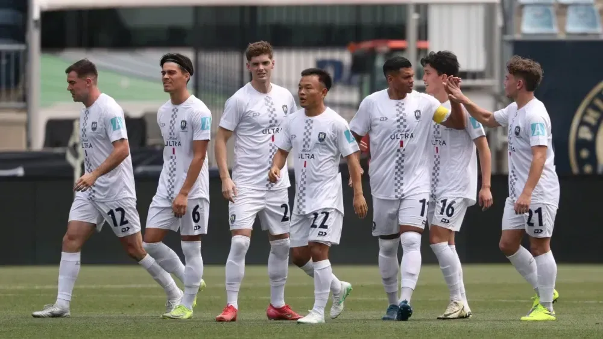

Jogadores do Auckland City perderam trabalho e dinheiro em troca do Mundial

Adam Mitchell sabe que vai fechar o mês no vermelho. O defensor do Auckland City largou o trabalho com vendas de imóveis na Nova Zelândia para disputar o Mundial de Clubes — mesmo sabendo que a equipe, semiprofissional, briga por honra e uma premiação ainda indefinida.
"Meu trabalho é 100% dependente das comissões", contou Mitchell à Reuters, após a dura derrota por 10 a 0 para o Bayern de Munique, na estreia.
"Se não estou vendendo, não entra dinheiro. Mas um torneio assim exige sacrifícios — e muitos aqui fizeram isso."
Sacrifício coletivo e dinheiro do próprio bolso
O novo formato da Copa do Mundo de Clubes, mais lucrativo, vem recebendo críticas por sobrecarregar o calendário do futebol europeu. Para times como o Auckland, o custo vai além do físico.
Muitos jogadores — professores, entregadores e operários — estão tirando do próprio bolso para representar a Oceania no torneio.
Além disso, boa parte da folga anual, limitada a quatro ou cinco semanas na Nova Zelândia, já havia sido usada no torneio classificatório, realizado nas Ilhas Salomão.
"Alguns estão no negativo, em licença não remunerada. É bom que as pessoas entendam o que sacrificamos para estar aqui", disse o defensor.
Premiação mínima, respeito máximo
Mesmo com prêmios em dinheiro para todos os participantes, o Auckland, representante da menor confederação do futebol mundial, receberá a menor fatia — uma parte dos US$ 3,58 milhões (R$ 19,6 milhões) reservados à Oceania.
Mitchell afirmou que o valor ainda está sendo negociado com a Federação Neozelandesa de Futebol.
Dentro de campo, o contraste entre atletas meio-período e estrelas globais ficou evidente. O Bayern entrou em campo com força máxima, impiedoso do início ao fim.
“Levar 10 gols nunca é bom. Mas enfrentamos um dos melhores times do mundo. Eles não aliviaram, e isso, de certa forma, é um sinal de respeito.”
Orgulho acima do placar
Apesar do resultado histórico, o moral do elenco continua em alta. O Auckland ainda enfrenta Benfica e Boca Juniors na fase de grupos. O próximo jogo é contra os portugueses, nesta sexta-feira (20), às 13h.
“Quem viu o jogo sabe que não desistimos em momento algum. Vamos continuar lutando.”
Na rotina comum, Mitchell divide o tempo entre vendas de imóveis, treinos noturnos e função de técnico no clube. Os dias começam cedo na academia e terminam tarde no campo.
“Não é o ideal para minha esposa”, brincou. “A gente quase não se vê, mas ela entende o sacrifício — e também faz parte dele.”
Mais que dinheiro: visibilidade
Mesmo com o impacto financeiro, Mitchell acredita que a exposição pode abrir portas. “Vai que alguém viu o jogo, sabe que trabalho no setor e quer conversar… é assim que se criam oportunidades.”
Críticas à presença do Auckland no torneio não incomodam. Para ele, o time fez por merecer.